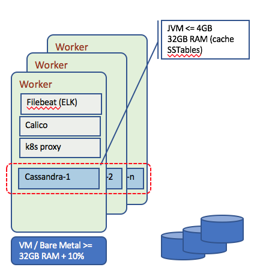

Cassandra Summary
In this article we are a quick summar of Cassandra capabilities in the context of data persistence and how to deploy it on Openshift.
Cassandra addresses linear scalability and high availability to persist a huge data set. It uses replication to multiple nodes managed in cluster, even deployed cross data centers.
Concepts
Cassandra uses a ring based Distributed Hash Table servers but without finger or routing tables. Keys are stored as in DHT to the next server with key > key id, replicated on the 2 next servers too. There is one ring per data center. The coordinator forward the query to a subset of replicas for a particular key. Every server that could be a coordinator needs to know the 'key to server' assignment.
Two data placement strategies:
- simple strategy: use two kinds of partitioners:
- random, which does chord like hashing
- byte ordered, which assigns range of keys to servers: easier for range queries
- network topology strategy for multiple data centers: it supports different configuration, like 2 replicas of each key per decision center.
First replica is placed according to the Partitioner logic, and make sure to store the other replica to different rack, to avoid a rack failure will make all copies of key not available. Go around the ring clockwise until encountering a server in a different rack.
Snitches: is a mechanism to map ip addresses to racks in DC. Cassandra support such configuration.
Client sends write to one coordinator node in Cassandra cluster. Coordinator may per key or per client or per query. It uses partitioner to send query to all replica nodes responsible for key. The process to write should be fast and not involving lock on resource. It should not involve read and disk seeks. Write operations are always successful, even in case of failure: the coordinator uses the Hinted Handoff mechanism (it assumes ownership of the key until being sure it is supported by the replica), as it writes to other replicas and keeps the write locally until the down replica comes back up. If all the replicas are done, the Coordinator buffers writes for few hours.
Here are some key concepts of Cassandra to keep in mind for this implementation:
- Cluster: the set of nodes potentially deployed cross data centers, organized as a 'ring'.
- Keyspace: like a schema in SQL DB. It is the higher abstraction object to contain data. The important keyspace attributes are the Replication Factor, the Replica Placement Strategy and the Column Families.
- Column Family: they are like tables in Relational Databases. Each Column Family contains a collection of rows which are represented by a Map
- Column – A column is a data structure which contains a column name, a value and a timestamp. The columns and the number of columns in each row may vary in contrast with a relational database where data are well structured.
Cassandra deployment
Deploying on "Docker Edge for desktop" kubernetes
For development work we use the Docker Edge version of Docker and enable Kubernetes (see this note from docker web site).
Then you can use our script deployCassandra.sh under the scripts folder BUT be sure to adapt the yaml settings in the folder deployments/cassandra to limit the replicas for what you need. The steps are the same as for ICP deployment so see next section.
Deployment on Kubernetes
Deploying stateful distributed applications like Cassandra is not easy. You will leverage the kubernetes cluster to support high availability and deploy c7a to the worker nodes.

We also recommend to be familiar with this kubernetes tutorial on how to deploy Cassandra with Stateful Sets.
Performance considerations
The resource requirements for higher performance c7a node are:
- A minimum of 32GB RAM (JVM + Linux memory buffers to cache SSTable) +
memory.availabledefined in Kubernetes Eviction policy + Resources needed by k8s components that run on every worker node (e.g. proxy) - A minimum of 8 processor cores per Cassandra Node with 2 CPUs per core (16 vCPU in a VM)
- 4-8 GB JVM heap, recommend trying to keep heaps limited to 4 GB to minimize garbage collection pauses caused by large heaps.
- Cassandra needs local storage to get best performance. Avoid to use distributed storage, and prefer hostPath or localstorage. With distributed storage like a Glusterfs cluster you may have 9 replicas (3x Cassandra replica factor which is usually 3)
Cassandra nodes tend to be IO bound rather than CPU bound:
- Upper limit of data per node <= 1.5 TB for spinning disk and <= 4 TB for SSD
- Increase the number of nodes to keep the data per node at or below the recommended capacity
- Actual data per node determined by data throughput, for high throughput need to limit the data per node.
The use of Vnodes is generally considered to be a good practice as they eliminate the need to perform manual token assignment, distribute workload across all nodes in a cluster when nodes are added or removed. It helps rebuilding dead nodes faster. Vnode reduces the size of SSTables which can improve read performance. Cassandra best practices set the number of tokens per Cassandra node to 256.
Avoid getting multiple node instances on the same physical host, so use podAntiAffinity in the StatefulSet spec.
spec: affinity: podAntiAffinity: requiredDuringSchedulingIgnoredDuringExecution: topologyKey: "kubernetes.io/hostname"
Using our yaml configurations
You can reuse the yaml config files under deployment/cassandra folder to configure a Service to expose Cassandra externally, create static persistence volumes, and use the StatefulSet to deploy Cassandra image.
The steps to deploy to ICP are:
-
Connect to ICP. You may want to get the admin security token using the Admin console and the script:
scripts/connectToCluster.sh.We are using one namespace called 'greencompute'.
You can also use our script
deployCassandra.shunder the../scriptsfolder to automate this deployment. -
Create Cassandra headless service, so application accesses it via KubeDNS. If you do wish to connect an application to cassandra, use the KubeDNS value of
cassandra-svc.greencompute.svc.cluster.local, orcassandra-svcorcassandra-0. The alternate solution is to use Ingress rule and set a hostname as cassandra.green.case. Thecasssandara-ingress.ymlfile defines such Ingress.$ kubectl apply -f deployment/cassandra/cassandra-service.yaml --namespace greencompute $ kubectl get svc cassandra-svc -n greencompute NAME TYPE CLUSTER-IP EXTERNAL-IP PORT(S) AGE cassandra-svc ClusterIP None <none> 9042/TCP 12h
-
Create static persistence volumes to keep data for cassandra: you need the same number of PV as there are cassandra nodes (here 3 nodes)
$ kubectl apply -f deployment/cassandra/cassandra-volumes.yaml
$ kubectl get pv -n greencompute | grep cassandra
cassandra-data-1 1Gi RWO Recycle Bound greencompute/cassandra-data-cassandra-0 12h
cassandra-data-2 1Gi RWO Recycle Available 12h
cassandra-data-3 1Gi RWO Recycle Available
- Create the StatefulSet, which defines a cassandra ring of 3 nodes. The cassandra image used is coming from dockerhub public repository.
If you are using your own namespace name or you change the service name, modify the service name and namespace used in the yaml :
env: - name: CASSANDRA_SEEDS value: cassandra-0.cassandra-svc.greencompute.svc.cluster.local
Cassandra seed is used for two purposes:
- Node discovery: when a new cassandra node is added (which means when deployed on k8s, a new pod instance added by increasing the replica), it needs to find the cluster, so here it is set the svc
- Assist on gossip convergence: by having all of the nodes in the cluster gossip regularly with the same set of seeds. It ensures changes are propagated regularly.
Here it needs to reference the headless service we defined for Cassandra deployment.
$ kubectl apply -f deployment/cassandra/cassandra-statefulset.yaml -n greencompute $ kubectl get statefulset -n greencompute NAME DESIRED CURRENT AGE cassandra 1 1 12h
- Connect to the pod to assess the configuration is as expected.
$ kubectl get pods -o wide -n greencompute NAME READY STATUS RESTARTS AGE IP NODE cassandra-0 0/1 Running 0 2m 192.168.35.93 169.61.151.164 $ kubectl exec -tin greencompute cassandra-0 -- nodetool status Datacenter: DC1 =============== Status=Up/Down |/ State=Normal/Leaving/Joining/Moving -- Address Load Tokens Owns (effective) Host ID Rack UN 192.168.212.174 257.29 KiB 256 100.0% ea8acc49-1336-4941-b122-a4ef711ca0e6 Rack1
The string "UN", means for Up and Normal state.
Removing cassandra cluster
We are providing a script for that ./scripts/deleteCassandra.sh which remove the stateful, the pv, pvc and service
grace=$(kubectl get po cassandra-0 -o=jsonpath='{.spec.terminationGracePeriodSeconds}') \
&& kubectl delete statefulset -l app=cassandra -n greencompute \
&& echo "Sleeping $grace" \
&& sleep $grace \
&& kubectl delete pvc,pv,svc -l app=cassandra
High availability
Within a cluster the number of replicas in the statefulset is at least 3 but can be increased to 5 when code maintenance is needed. The choice for persistence storage is important, and the backup and restore strategy of the storage area network used.
When creating connection to persist data into a keyspace, you specify the persistence strategy and number of replicas at the client code level. Mostly using properties file.
p.setProperty(CASSANDRA_STRATEGY, "SimpleStrategy"); p.setProperty(CASSANDRA_REPLICAS, "1");
For the number of replicas, it is recommended to use 3 per datacenter.
The spec.env parameters in the statefulset defines the datacenter name and rack name too.
Code
We have done two implementations for persisting asset data into Cassandra, one using Cassandra client API and one with SpringBoot cassandra repository API.
Cassandra client API
The code is under refarch-reefer-ml project and can be loaded into Eclipse. This component is deployed as container inside a kubernetes cluster like Openshift. See code explanation, how to build and run in this note
In the pom.xml we added the following dependencies to get access to the core driver API:
<dependency> <groupId>com.datastax.cassandra</groupId> <artifactId>cassandra-driver-core</artifactId> <version>3.1.4</version> </dependency>
CassandraRepo.java and it basically connects to the Cassandra cluster when the DAO class is created...
Builder b = Cluster.builder().addContactPoints(endpoints); cluster = b.build(); session = cluster.connect();
It is possible also to create keyspace and tables by API if they do not exist by building CQL query string and use the session.execute(aquery) method. See this section below
Define Assets Table Structure with CQL
Using the csql tool we can create space and table. To use cqlsh connect to cassandra pod:
$ kubectl exec -tin greencompute cassandra-0 cqlsh
assetmonitoring:
sqlsh> create keyspace assetmonitoring with replication={'class':'SimpleStrategy', 'replication_factor':1}; sqlsh> use assetmonitoring; sqlsh:assetmonitoring> create TABLE assets(id text PRIMARY KEY, os text, type text, ipaddress text, version text, antivirus text, current double, rotation int, pressure int, temperature int, latitude double, longitude double);
CREATE INDEX ON assetmonitoring.assets (os); CREATE INDEX ON assetmonitoring.assets (type);
If you reconnect to the pod using cqlsh you can assess the table using
describe tables describe assets
Some useful CQL commands
# See the table schema cqlsh> describe table assets; # modify a table structure adding a column cqlsh> alter table assets add flowRate bigint; # change column type. example the name column: cqlsh> alter table assets alter name type text; # list content of a table cqlsh> select id,ipaddress,latitude,longitude from assets; # delete a table cqlsh> drop table if exists assets;
Use Cassandra Java API to create objects
- Create keyspace:
StringBuilder sb = new StringBuilder("CREATE KEYSPACE IF NOT EXISTS ") .append(keyspaceName).append(" WITH replication = {") .append("'class':'").append(replicationStrategy) .append("','replication_factor':").append(replicationFactor) .append("};"); String query = sb.toString(); session.execute(query);
-
Create table
StringBuilder sb = new StringBuilder("CREATE TABLE IF NOT EXISTS ") .append(TABLE_NAME).append("(") .append("id uuid PRIMARY KEY, ") .append("temperature text,") .append("latitude text,") .append("longitude text);"); String query = sb.toString(); session.execute(query);
-
insert data: there is no update so if you want a strict insert you need to add "IF NOT EXISTS" condition in the query.
Issues
- When having the cassandra replica set to more than two, the cassandra operations are not happenning parallely on both the pods at a time. Some operations are happenning on one node and some others on the other node. Due to this, inconsistent data is retrieved since both the tables doesnot have the same data.